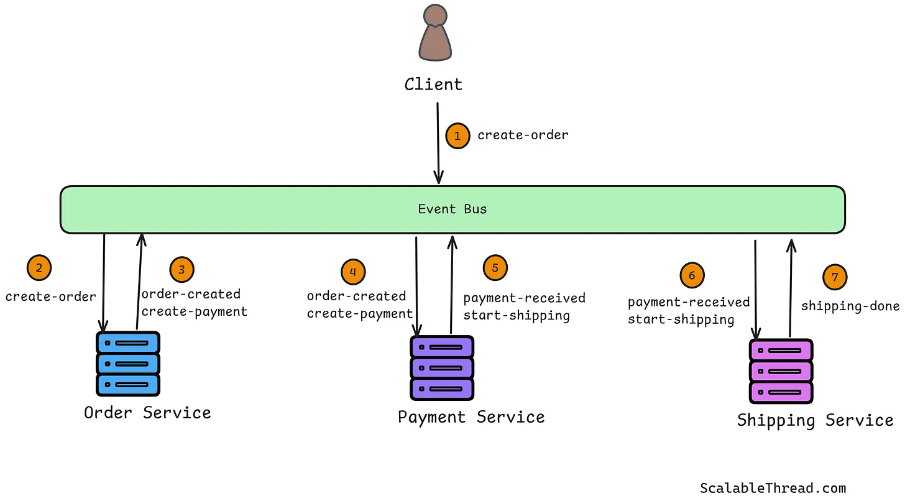
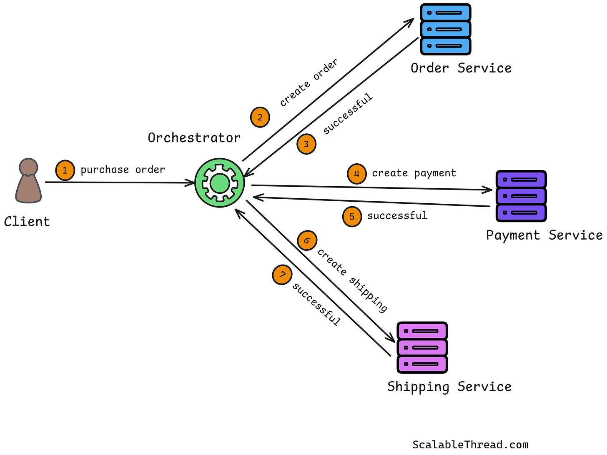

System Design Mastery
Master scalable systems with premium insights
🔄 Saga Pattern — Distributed Transactions Without a Global Transaction
1️⃣ What is it?
The Saga Pattern is a way to manage distributed transactions across multiple microservices without using a single big transaction.
Instead of one big transaction:
- It breaks into multiple small transactions
- Each service performs its own step
- If something fails → compensating actions (rollback steps) are triggered
2️⃣ Why does it exist? (What problem does it solve?)
In microservices:
- Each service has its own database
- Traditional transactions (ACID) don’t work across services
- Two-phase commit (2PC) is slow and not scalable
Saga solves:
- Distributed transaction management
- Failure handling
- Maintaining data consistency across services
🧩 Example: Order flow
User places an order.
- Order Service → create order
- Payment Service → process payment
- Inventory Service → reserve stock
Problem
If payment succeeds but inventory fails:
❌ Payment done
❌ Order created
❌ Stock not available
System becomes inconsistent.
Saga Solution
Saga ensures:
If one step fails → undo previous
steps
If inventory fails :
→ Refund Payment
→ Cancel Order
👉 Each step has a reverse action
Saga Flow
Order Created
↓
Payment Done
↓
Inventory Failed ❌
↓
Refund Payment (Compensation)
↓
Cancel Order
3️⃣ What breaks without it?
- Partial updates happen
- Payment succeeds but order fails ❌
- Inventory reduced but order not placed ❌
- System becomes inconsistent
📌 Example: Order created → Payment failed → Order still exists ❌
4️⃣ Real-world analogy
Travel booking ✈️
You book:
- Flight
- Hotel
- Taxi
If hotel booking fails:
- Cancel flight
- Cancel taxi
Each step has a compensation step.
6️⃣ Types of Saga Pattern
🔹 Choreography (Event-based)
Idea: Services communicate using events (no central controller).
Flow:
Order Service → Event → Payment Service
Payment Service → Event → Inventory Service
Each service reacts to events.

Advantages
- ✔ Simple
- ✔ No central dependency
Disadvantages
- ❌ Hard to debug
- ❌ Complex event chains
🔹 Orchestration (Central control)
Idea: A central orchestrator controls all steps.
Flow:
Orchestrator → Order → Payment → Inventory

Advantages
- ✔ Easier to manage
- ✔ Better control
Disadvantages
- ❌ Central dependency
- ❌ Slight bottleneck
7️⃣ Real app connection
🛒 E-commerce
Order Created
↓
Payment Processed
↓
Inventory Reserved
↓
Confirmation Sent
Failure case
Inventory Failed
↓
Refund Payment
↓
Cancel Order
8️⃣ When to use / When NOT to use
✅ Use Saga when:
- Microservices architecture
- Distributed transactions
- Event-driven systems
- No shared database
❌ Avoid Saga when:
- Monolithic systems
- Simple CRUD apps
- Strong ACID transactions required
9️⃣ One common mistake
🚨 Thinking Saga guarantees strong consistency
Saga provides: eventual consistency, not immediate consistency.
👉 ACID = Instant
consistency
👉 Saga = Eventual consistency
Difference: ACID vs Saga Pattern
1️⃣ ACID (Traditional Transaction)
What it means :
All operations
must succeed together or fail together (all-or-nothing).
Used in :
Monolithic systems
Single database
🔥 Key idea : ACID ensures strong consistency using rollback.
2️⃣ Saga Pattern (Microservices)
What it means :
Each step is
independent, and if something fails, we undo using compensation actions.
Used in :
Microservices
Distributed systems
🔥 Key idea : Saga ensures consistency using compensating actions (undo logic).
| Feature | ACID (Bank) | Saga (E-commerce) |
|---|---|---|
| System Type | Single DB | Microservices |
| Transaction | One big transaction | Multiple small transactions |
| Failure Handling | Automatic rollback | Manual compensation |
| Example | Bank transfer | Online order system |
| Consistency | Strong | Eventual |
What is Two-Phase Commit (2PC)?
2PC is a
protocol to ensure all services commit or rollback together in a distributed system.
It
tries to behave like ACID across multiple services.
Phase 1: Prepare
Coordinator asks all services:
“Can you commit?”
Service A → Yes
Service B → Yes
Phase 2: Commit
If all say yes:
“Commit now”
If any says no:
“Rollback everything”
So, Coordinator ensures: Both succeed OR both fail
⚠️ Problem with 2PC
If coordinator crashes → system stuck
| Feature | 2PC | Saga |
|---|---|---|
| Transaction Type | Global transaction | Multiple local transactions |
| Consistency | Strong consistency | Eventual consistency |
| Failure Handling | Rollback | Compensation |
| Blocking | Yes (waits for all) | No (asynchronous) |
| Scalability | Poor | High |
| Performance | Slower | Faster |
🎯 Interview-ready one-liner
The Saga pattern manages distributed transactions in microservices by breaking them into smaller
steps with compensating actions to maintain eventual consistency.
Saga = Step-by-step transaction + undo if
failure
🧠 Summary
Saga pattern handles distributed transactions by splitting them into smaller steps across services. If a step fails, compensating transactions are executed to undo previous steps. It ensures eventual consistency in microservices without using global transactions.